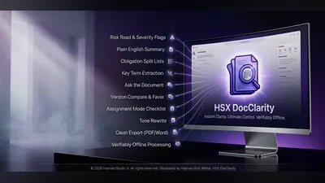
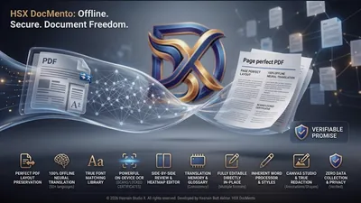
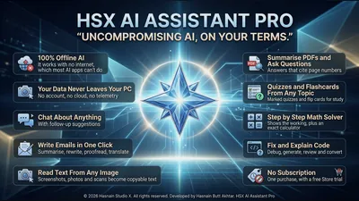
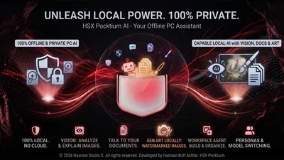
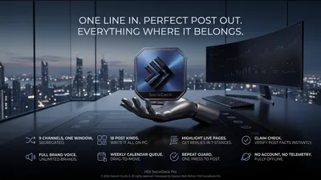
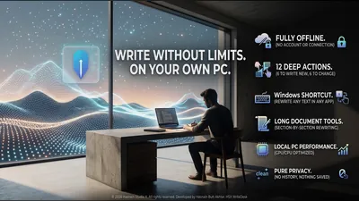

Private AI assistants, writing and document apps for Windows
An assistant to ask, help with writing and posting, a browser that keeps to itself, and tools for reading, summarising and organising documents. The kind of work that now usually means sending everything to someone else’s server.
Why these run on your own machine
Document tools are where the subscription model bites hardest, because the files are the ones you cannot afford to lose access to. A contract, an invoice archive or a client’s brand kit should not stop opening because a plan lapsed. Everything here is bought once and keeps working, and the documents never go anywhere to be processed.
What to check before you buy anything in this category
- Whether your documents are uploaded to be converted
- Most free online PDF tools work by receiving your file. For anything confidential that is the whole question.
- What happens when you stop paying
- Subscription document software often locks the files, not just the features.
- Whether output is standard
- A PDF or a document that only opens properly in the tool that made it is a trap worth avoiding.
8 ai writing & docs applications available now

DocClarity Pro Windows On-device AI document analysis and clarity tool Document analysis powered by an on-device AI model Your documents are never transmitted externally All processing runs locally on your own PC Full details
DocMento Pro Windows Offline PDF, document translation and 300 DPI canvas studio Neural translation running entirely on your device OCR and language detection fully offline Document review and publishing workflow Full details DocsMining Android Scan, read and translate documents on your phone Edge-detecting scans with colour, grayscale, black and white and ink filters Text recognition across Latin, Chinese, Japanese, Korean and Devanagari scripts Offline translation once a language model is downloaded Full details
PC AI Assistant Pro Windows Private AI that lives on your PC Chat about anything, in six assistant styles with follow-up suggestions Write, summarise, rewrite, proofread and translate in one click Explain, fix, generate, review and convert code Full details
Pocktium AI Windows Chat, documents, and images with local AI Chat with a language model running locally Ask questions over your own documents Generate images on your own hardware Full details
SocialDeck Pro Windows One line in, a finished post for every channel out Nine channels in one window, each kept separate Eighteen post kinds, all written on your own PC Brand voice rules for as many brands as you run Full details
WriteDesk Pro Windows Offline writing desk that rewrites on your own PC Twelve deep actions - six to write new text, six to change existing text Windows shortcut rewrites selected text in any application Section-by-section rewriting for long documents Full detailsQuestions about ai writing & docs apps
Are my documents uploaded for conversion?
No. Conversion, translation and export all happen on your own machine. There is no upload and no server-side copy.
Do the files stop opening if I stop paying?
No. Each application is a one-time purchase, and what it produces is a standard file that other software can open.
Do the AI assistants send my questions anywhere?
No. The assistants run on your own machine, so what you ask and the files you share with them stay there.
Do I need an account?
No. No application in the catalogue asks you to create one.
Other parts of the catalogue
Full Windows catalogue · Android catalogue · Privacy policies · About the studio
Hasnain Studio X™ is a trade mark of Hasnain Studio X. Product names shown on this page are trademarks of Hasnain Studio X.